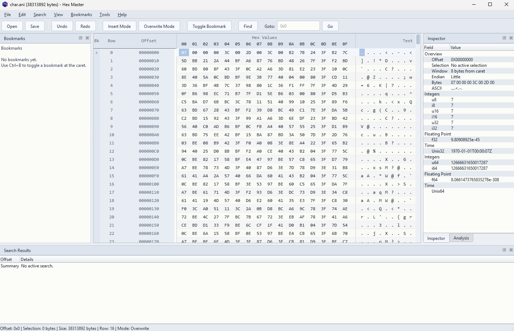

High-Performance Hex Editor
Hex editing for real binary work.
Hex Master is a desktop editor for binary data, executable files, firmware images, save files, and other raw byte-oriented formats. It keeps the classic offset, hex, and text workflow, then adds stronger search, typed inspection, and better large-file handling.
Download the Windows zip release, extract it, and run HexMaster.exe.
Interface
A familiar layout with stronger search, replace, and inspection tools.

Features
Built around the workflows a binary editor actually needs.
Editing
- Hex-side and text-side editing
- Insert and overwrite modes
- Structural insert, delete, cut, and paste
- Undo and redo through the document core
Inspection
- Typed inspector for integers, floating point, time, and IPv4
- Inline inspector editing for writable values
- Grouped analysis dock with checksums and digests
- Bookmarks with labels and colors
Search and Replace
- Text, raw hex-byte, and typed-value search
- Remembered search and replace history
- Progress feedback for search and replace workflows
- Tabbed result sets with direct navigation
Large File Handling
Designed to avoid the usual load-everything approach.
The viewport does not need the whole file in UI memory. It reads the visible region plus a bounded cache window, which keeps startup fast and memory use controlled.
Search, replace, backup, and save work in chunks instead of giant transient buffers. That keeps long-running operations more predictable and makes progress reporting possible.
The goal is practical desktop behavior on ordinary machines: fast navigation, bounded memory growth, and clearer feedback on large binary files.